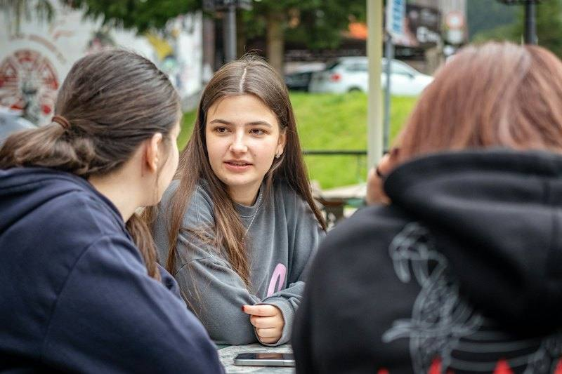

Unterrichtseinheit
45Min.
Was ist Cybermobbing? – Einstieg ab Klasse 5
Doppelstunde zum Einstieg: Eine Fallgeschichte aus dem Klassenchat, die Rollen im Mobbing und erste Schritte für Betroffene und Zuschauende.
Wenn Beleidigungen, peinliche Fotos oder Ausgrenzung im Klassenchat nicht mehr aufhören. Was dahintersteckt – und was wirklich hilft.

Von Cybermobbing spricht man, wenn eine Person über längere Zeit mit digitalen Mitteln beleidigt, bloßgestellt, bedroht oder ausgeschlossen wird. Typisch ist ein Machtungleichgewicht: Mehrere gegen eine:n, Beliebte gegen Außenseiter:innen. Ein einmaliger Streit ist kein Mobbing – aber er kann eines werden.
Anders als auf dem Schulhof hört Cybermobbing nach Schulschluss nicht auf. Das Handy ist immer dabei, Inhalte verbreiten sich in Minuten und lassen sich kaum zurückholen. Und weil Täter:innen ihr Gegenüber nicht sehen, fällt Grausamkeit leichter.
Betroffene sprechen oft nicht darüber – aus Scham oder aus Angst, dass ihnen das Handy weggenommen wird. Achte auf Veränderungen:

Es gibt keinen eigenen Straftatbestand „Cybermobbing“. Einzelne Handlungen können aber strafbar sein, etwa Beleidigung (§ 185 StGB), Üble Nachrede und Verleumdung (§§ 186, 187 StGB), die Verletzung des höchstpersönlichen Lebensbereichs durch Bildaufnahmen (§ 201a StGB), Nachstellung (§ 238 StGB) oder Bedrohung (§ 241 StGB). Ab 14 Jahren ist man strafmündig. Eine Übersicht steht unter Recht kompakt.
Unterrichtseinheit
45Min.
Doppelstunde zum Einstieg: Eine Fallgeschichte aus dem Klassenchat, die Rollen im Mobbing und erste Schritte für Betroffene und Zuschauende.
Arbeitsblatt
30Min.
Die Klasse erarbeitet gemeinsam Regeln für den Klassenchat und hält sie auf einem Plakat fest. Die Regeln entstehen aus der Gruppe, nicht von oben.
Artikel
12Min.
Überblick für Lehrkräfte und Schulleitungen: Beweissicherung, Datenschutz, Erziehungs- und Ordnungsmaßnahmen und der Weg zur Anzeige.